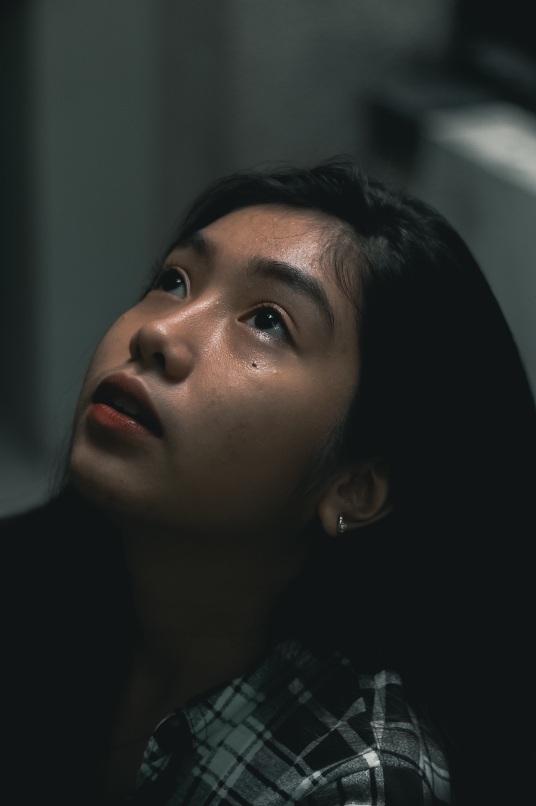
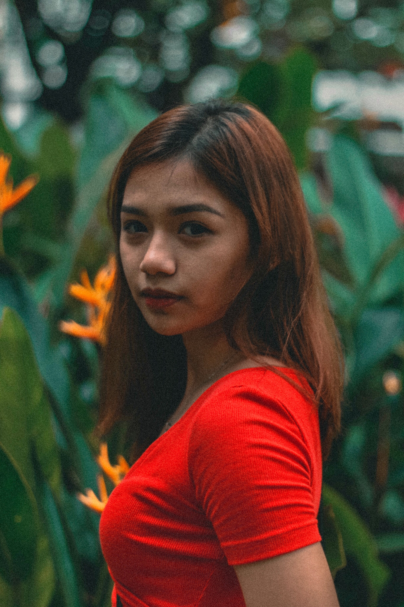
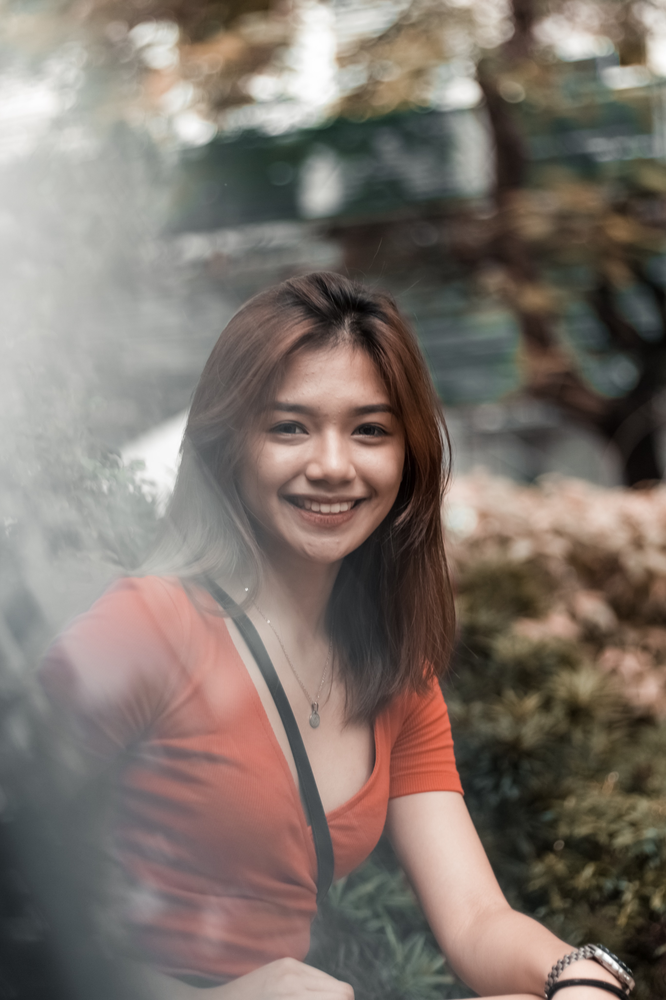
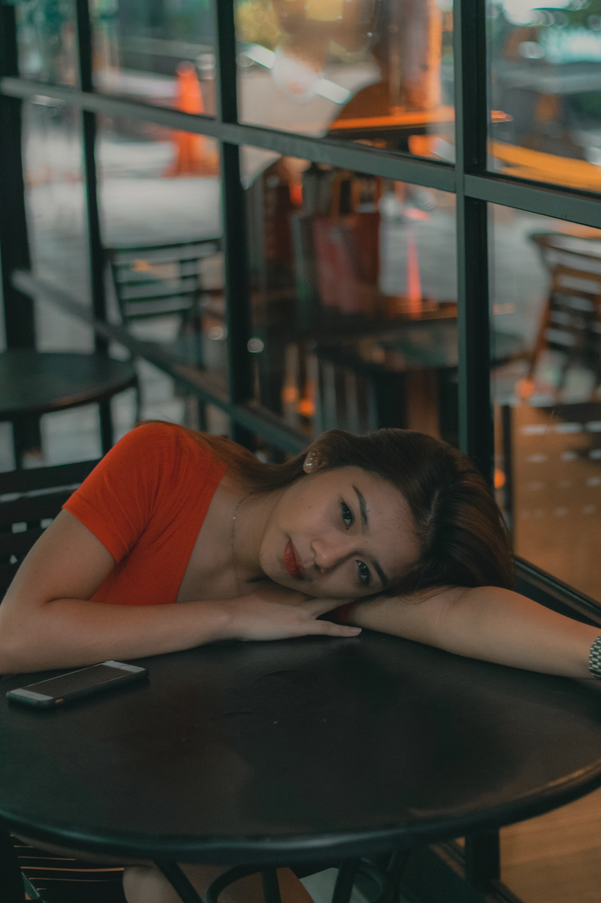

My Works:
Here are some of my works I did for my past clients:
Logo Making

Daisy’s dressed chicken is located at a wet market in Ilocos Norte. The client wants to elevate their shop by creating branding and logo for their store. They want the logo to be basic-looking and somehow similar to the logos that you can see around them.

CharitAble app is a mobile application made by students of Mapua University. This is their thesis which focuses on the donations and charities through their application.
Magazine
Agayat


This is a self-magazine I made for my portfolio. It is entitled Agayat an Ilocano word which translates “to Love”.
Constructive Art "Finess"


“Finess” is a constructivism magazine I maid for a client. The client asked for modern and yet matches the art style that she asked.
Photography
Portrait


 
 
Landscape